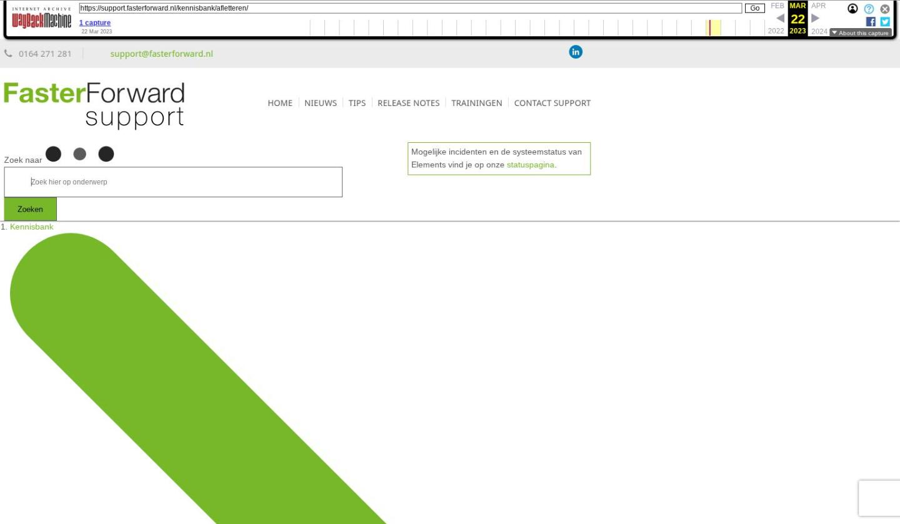

Afletteren

Tekstinhoud
Afletteren
Ontvangsten op de bankrekening moeten verwerkt worden met de openstaande posten. Dit noemen we afletteren. Er zijn verschillende manieren om de posten af te letteren. Dit kan automatisch of handmatig zijn.
Openstaande posten
Afletteren op debiteurenkaarten
Openstaande posten tegen elkaar afletteren
Openstaande posten met verschil afletteren
Afletteren via het dagboek
Afletteren via memoriaal
Automatisch afletteren
Kruisposten afletteren
Afletteren ongedaan maken
Openstaande posten
De openstaande posten debiteuren kan je terugvinden onder Financieel – Debiteuren – Openstaande posten debiteuren. Door op een debiteur te klikken, kan je zien welke posten nog openstaan. Via het vergrootglasicoon wordt de Saldoverklaring geopend. Hierin kan je zien of er al op- en afboekingen zijn geweest op deze post. De post waar het over gaat is in de Saldoverklaring blauw gemarkeerd. De Saldoverklaring is via verschillende manieren te openen ook bijvoorbeeld via de grootboekrekening.
Het afletteren van deze openstaande posten kan op verschillende manieren gebeuren.
Afletteren op debiteurenkaarten
Via Financieel – Debiteurenkaarten kom je uit in de debiteurenkaarten. Hier dien je de juiste periode te selecteren om de debiteuren te laten verschijnen. Per debiteur kan je zien wat er debet en credit geboekt is en of er een openstaand saldo is. Dit door op de debiteur te klikken. Ook kan je hier terugvinden of de posten afgeletterd zijn. Is de post afgeletterd dan staat er in de checkbox een vinkje en de checbox is uit gegrijsd.
Wanneer een post niet is afgeletterd staat er geen vinkje in de checkbox en de checkbox is nog bewerkbaar. Daarnaast heb je bovenin de debiteurenkaart een filter afletteren, waarmee je kan aangeven of je niet afgeletterde posten, afgeletterde posten of beiden wilt zien.
Openstaande posten tegen elkaar afletteren
De niet afgeletterde posten kan je vanuit de debiteurenkaart direct afletteren. Posten die bij elkaar horen (waarvan debet en credit gelijk is) kan je tegen elkaar afletteren. Dit doe je door de checkbox voor de posten aan te vinken en vervolgens op te slaan.
Openstaande posten met verschil afletteren
Het kan ook zijn dat er een verschil zit tussen de bij elkaar horende posten. Het verschil kan je dan via het dagboek memoriaal boeken naar een andere grootboekrekening. Het verschil afboeken via memoriaal kan alleen bij grootboekrekeningen met daaronder een subadministratie. Dit gaat als volgt:
Selecteer de posten door middel van het aanklikken van de checkbox en sla vervolgens op:
1. Selecteer de twee openstaande posten en sla op
Dan krijg je een pop-up te zien, waarin je het dagboek, grootboekrekening, periode en omschrijving kunt aangeven. Bijvoorbeeld dagboek memoriaal en grootboekrekening 4585 – Betalingsverschillen. Middels het vinkje sla je dit op.
Elements stelt zelf het restverschil vast, waardoor het verschil wordt geboekt in het memoriaal.
Afletteren via het dagboek
Het kan ook zo zijn dat er 2 posten staan, waarvan de 1 is afgeletterd en de ander nog niet. Het is dan mogelijk om via het dagboek de openstaande post alsnog af te letteren.
De volgende stappen neem je om de post alsnog af te letteren:
Je klikt op het boekstuknummer van de post die niet is afgeletterd
In het dagboek zoek je de juiste post op en deze selecteer je met jouw muis
Tab met de tabknop op je toetsenbord naar de kolom Bedrag en klik op F6
Er verschijnt een pop-up met daarbij de openstaande bedragen van de debiteur. Hier selecteer je het juiste bedrag en klik op enter. Het openstaande bedrag wordt verplaatst naar rechts en komt links op 0,00 te staan
Opslaan met het groende vinkje
Dan kom je terug in het dagboek. Deze dien je ook op te slaan door middel van het groene vinkje
Afletteren via memoriaal
Het kan zo zijn dat je maar 1 boeking ziet, waarvan de checkbox is uitgegrijsd. Deze boeking moet dan via het dagboek memoriaal afgeletterd worden.
Om dit te doen ga je naar het memoriaal dagboek via Financieel – Boekingen – Boeking invoeren – Memoriaal algemeen. Hier neem je de volgende stappen:
Je tabt naar de kolom Grootboekrekening en je vult daar de grootboekrekening van debiteuren in (middels pijltjestoets en enter kan je deze selecteren)
Je vult het veld omschrijving en klikt op enter
Vervolgens ga je naar het veld relatie en hier vul je de betreffende debiteur in (middels pijltjestoets en enter kan je deze selecteren)
In het veld Bedrag klik je op F6 op de openstaande posten op te halen
Hier selecteer je de openstaande post en middels enter kan je deze op betaald zetten. Het bedrag verplaatst dan naar rechts
De handelingen moet je opslaan met het groene vinkje
Dan kom je terug in het dagboek en ook deze moet je opslaan middels het groene vinkje
Automatisch afletteren
Wanneer per debiteur het debet- (+) en creditbedrag (-) gelijk zijn, alsook het factuur- of dossiernummer, zal Elements deze boeking automatisch gaan afletteren. Komt hetzelfde factuurnummer dubbel voor of verschilt het factuurnummer met bijvoorbeeld een extra spatie, volgt geen automatisch aflettering.
Wanneer Elements de boeking automatisch heeft afgeletterd dan verschijnt er in het dagboek een icoontje van het automatisch afletteren:
Kruisposten afletteren
Kruisposten is een grootboekrekening die wordt gebruikt om geld tussen de kas en de bank, of twee bankrekeningen onderling, uit te wisselen. Het gaat hierbij wel om rekeningen van jezelf, dus niet het overboeken van een geldbedrag naar de rekening van iemand anders. De reden dat je hier een speciale tussenrekening voor gebruikt is dat je niet direct op de twee bankrekeningen mag boeken.
In deze handleiding kan je lezen hoe je kruisposten kunt afletteren.
Afletteren ongedaan maken
Het afletteren maak je ongedaan door in het afgeletterde boekstuk een aanpassing te doen, bijvoorbeeld het veranderen van de grootboekrekening of bedrag. In het boekstuk krijg je dan een melding te zien of je de wijziging daadwerkelijk wilt doorvoeren, omdat het een afgeletterd boekstuk betreft. Ga je door dan wordt het afletteren ongedaan gemaakt.
Laatste update: 14 december 2022
Tagged: afletteren
Was deze informatie nuttig?
Ja Nee